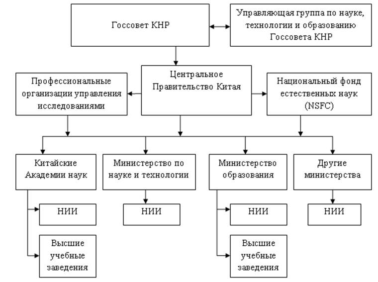
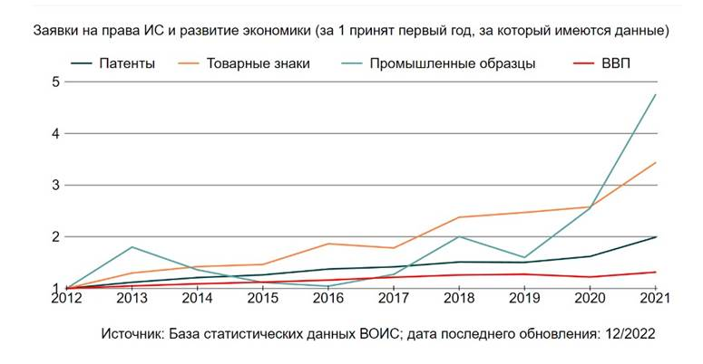
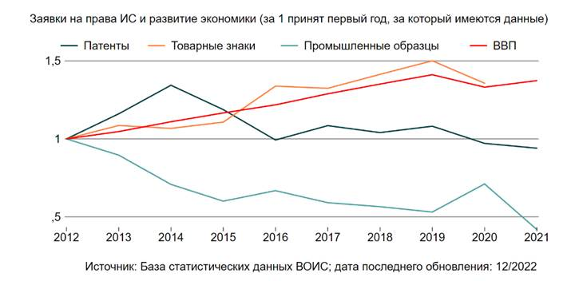

4 ВОПРОСЫ ФИНАНСИРОВАНИЯ РАЗВИТИЯ НАУКИ И ТЕХНОЛОГИЙ
4.1 Выработка рекомендаций по увеличению финансирования развития науки, включая средства местных исполнительных органов, внебюджетные средства и обязательства недропользователей
В настоящее время на развитие науки во многих странах направляются значительные денежные средства, что является условием их конкурентоспособности на мировой арене. Создаются благоприятные условия для привлечения научных кадров, дополнительных инвестиций, применяются различные методы государственной поддержки. Наращивание инвестиций в научную сферу позволяет занять лидирующие места в области научных открытий, которые отражают уровень технологического развития страны.
Инвестиции в науку и инновации, технологический прогресс, внедрение технологий, социально-экономические воздействие, а также иная государственная поддержка оценивается глобальным инновационным индексом, проводимым Всемирной организацией интеллектуальной собственности (ВОИС).
Согласно рейтингу стран, мировыми лидерами за последние 5 лет признаны Швейцария, США, Швеция, Великобритания, Южная Корея и Нидерланды [1].
Таблица 4.1.1. Казахстан в рейтинге ВОИС
|
Годы |
2016 |
2017 |
2018 |
2019 |
2020 |
2021 |
2022 |
|
Позиция |
75 |
78 |
74 |
79 |
77 |
79 |
83 |
Таким образом, показатель индекса инновации РК имеет отрицательную тенденцию, так как за последние 7 лет Казахстан потерял 8 позиций в данном рейтинге.
Таблица 4.1.2. Рейтинг стран (2023 г.):
|
2023 год |
Место |
|
Казахстан |
83 |
|
Швейцария |
1 |
|
Швеция |
2 |
|
Соединенные штаты Америки |
3 |
|
Великобритания |
4 |
|
Сингапур |
5 |
|
Финляндия |
6 |
|
Нидерланды |
7 |
|
Германия |
8 |
|
Дания |
9 |
|
Корея |
10 |
|
Франция |
11 |
|
Китай |
12 |
|
Япония |
13 |
|
Израиль |
14 |
|
Канада |
15 |
В 2023 году соседями Казахстана по рейтингу были Узбекистан (84 место) и Республика Беларусь (82 место).
За последние 6 лет рейтинг стран по индексу инноваций выглядел следующим образом[1]:
Таблица 4.1.3.
|
Места в рейтинге |
2018 |
2019 |
2020 |
2021 |
2022 |
2023 |
|
1 |
Швейрация |
Швейрация |
Швейрация |
Швейрация |
Швейрация |
Швейрация |
|
2 |
Нидерланды |
Швеция |
Швеция |
Швеция |
США |
Швеция |
|
3 |
Швеция |
США |
США |
США |
Швеция |
США |
|
4 |
Великобритания |
Нидерланды |
Великобритания |
Корея |
Великобритания |
Великобритания |
|
5 |
Сингапур |
Великобритания |
Нидерланды |
Нидерланды |
Нидерланды |
Сингапур |
|
6 |
США |
Финляндия |
Дания |
Финляндия |
Корея |
Финляндия |
|
7 |
Финляндия |
Дания |
Финляндия |
Сингапур |
Сингапур |
Нидерланды |
|
8 |
Дания |
Сингапур |
Сингапур |
Дания |
Германия |
Германия |
|
9 |
Германия |
Германия |
Германия |
Германия |
Финляндия |
Дания |
|
10 |
Ирландия |
Израиль |
Корея |
Франция |
Дания |
Корея |
Как видно из таблицы, в течение последних лет в рейтинге лидируют 3 страны: Швейцария, Швеция и США. Однако инвестиции в науку в Швейцарии или в Швеции существенно ниже затрат, вливаемых такими гигантами как США или Китай. При этом Швейцария сохраняет первое место по инновациям с 2012 года.
Таблица 4.1.4.
|
2021 год |
Бюджет на науку (данные ОЭСР) |
|
Швейцария |
19,9 млрд долларов США |
|
Швеция |
18,5 млрд $ |
|
США |
709.7 млрд $ |
|
Великобритания |
83.7 млрд $ |
|
Южная Корея |
110.1 млрд $ |
Таким образом, бюджет на науку в Швейцарии в 2021 году в 35 раз был меньше аналогичного бюджета в США, в 4,2 раза меньше, чем в Великобритании и в 5,5 раза меньше чем в Южной Корее [2].
Основными причинами данного феномена эксперты считают:
- образованные трудовые кадры,
- ориентацию на зеленую экономику,
- привлечение международных инвестиций из транснациональных компаний,
- сильные научные и исследовательские центры,
- инкубаторы для стартапов и технологические парки, распределенные по всей территории страны.
Таким образом, определение эффективных и практических путей для финансирования науки и создания благоприятных условий для ее развиттия остается актуальной темой для отчета.
П.1 Изучение опыта зарубежных стран по финансированию науки
Основными источниками финансирования науки являются государственная поддержка и вливания со стороны бизнеса.
Зачастую в структурах страновых расходов превалирует государственная поддержка науки, поскольку требуются крупные инвестиции в инфраструктуру связанные с высоким риском отсутствия положительного результата. Отдельные сферы науки также требуют обязательного государственного регулирования и контроля: научные исследования в области ядерной энергетики, генетики и некоторые другие сферы.
В мире существуют следующие виды источников финансирования научных проектов:
1. Государственное финансирование. Государство выделяет средства для финансирования научных исследований через различные агентства, министерства и фонды.
2. Частные фонды и организации. Множество частных некоммерческих фондов, филантропических организаций и независимых исследовательских организаций предоставляют гранты и стипендии для финансирования научных проектов.
3. Бизнес и промышленность. Коммерческие организации инвестируют в исследования и разработки (ИИР) для развития новых продуктов, технологий и инноваций.
4. Университеты и академические институты. Университеты и исследовательские институты получают финансирование через гранты, контракты и спонсорство, а также через собственные исследовательские программы.
5. Международные исследовательские организации. Многие международные организации, такие как Европейская комиссия, ООН и Всемирный банк, предоставляют средства для международных исследовательских проектов.
6. Краудфандинг. В последние годы краудфандинг стал популярным способом сбора средств на научные исследования, позволяющим обычным людям вносить свой вклад в развитие науки.
Выбор конкретного источника финансирования зависит от природы и целей исследовательского проекта, а также от доступности и конкретных требований финансирующей организации. Многие исследователи используют комбинацию различных источников для обеспечения финансирования своих проектов.
С целью определения дополнительных источников финансирования науки в Казахстане рассмотрим международный опыт.
П.1.1 Изучение опыта США
Как отмечалось, общий бюджет США на науку в 2021 году составил 709,7 млрд долларов, или 3,4% ВВП. В сравнении с 2000 годом (360,3 млрд. долларов США, или 2,6% ВВП), бюджет на науку вырос практически в 2 раза.
Финансирование науки в США является комплексным и многоуровневым процессом, который включает как государственные источники, так и частные и международные источники финансирования.
Большая часть национальных фундаментальных исследований в США получает поддержку со стороны правительства, в то время как прикладные исследования в основном финансируются из частных источников. Значительный вклад в финансирование исследований и разработок в США также вносят неправительственные организации, сотрудничающие с научными учреждениями на конкурсной основе.
Финансирование исследований и разработок в США носит иерархический характер: приоритетно финансируются разработки, на втором месте находятся прикладные исследования, а на третьем –фундаментальная наука. [3]
Финансирование науки в США в 2020 (последние данные) выглядело следующим образом:
Таблица 4.1.5.
|
Источники финансирования |
Фундаментальная |
Прикладная |
Разработки |
|
Правительство |
41% |
31% |
11% |
|
Бизнес |
34% |
57% |
87% |
|
Другие |
25% |
12% |
2% |
Таким образом, политика США в области науки сфокусирована на максимальной результативности разработок и внедрении высокотехнологичных производств для повышения конкурентноспособности страны. [4]
Из таблицы видно, что в финансировании науки очень высока доля бизнеса.
Следует отметить, что бюджетное финансирование науки по отраслям распределяется неравномерно. Львиная доля затрат приходится на физические и технические науки (60-70%), во вторую очередь финансируется наука о жизни (20-30%), а затем социальные и психологические науки (3-5%) и прочие научные направления (1-5%) [5].
Роль Конгресса центральна в определении приоритетов научно-исследовательских работ национального значения – он принимает решения о финансировании и его распределении как в целом, так и в рамках отдельных агентств и программ. Распределяя бюджет на последующие годы, Конгресс решает две важные задачи: определить объем федеральных средств, предназначенных для научных исследований, и установить приоритеты и распределение этих доступных средств.
Основными получателями бюджетных средств на науку являются следующие департаменты: департамент обороны (43%), департамент здравоохранения (26%), департамент энергетики (11%), NASA (7%), департамент научного фонда (4%), департамент сельского хозяйства (2%) и другие.
Основными крупными государственными научными заказчиками являются Министерство обороны (порядка 40%), Министерство здравоохранения и социальных служб - 27% и Министерство энергетики -12%.
В США научно-исследовательские и опытно-конструкторские работы проводятся через разнообразные организационные структуры, включая федеральные лаборатории и научные отделы в рамках федеральных ведомств, университеты, научные отделения корпораций и научные организации, связанные с некоммерческими учреждениями. [6]
При этом университеты сконцентрированы на обучении и научных исследованиях, проводимых отдельными преподавателями или их группами, в то время как корпорации в большинстве своем ориентированы на решение краткосрочных задач, возникающих под воздействием рыночных факторов. Национальные лаборатории, с другой стороны, занимаются долгосрочными междисциплинарными исследованиями, которые часто объединяют в себе фундаментальные научные исследования и разработку технологий.
Одним из основных требований распределения всех грантов является то, что результаты исследований должны быть опубликованы в научных журналах, представлены на научных конференциях и запатентованы.
В США распространены меры государственной поддержки и стимулирование бизнеса для инвестирования в науку. Так государство предоставляет исследовательским организациям и изобретателям привилегированный налоговый режим, разнообразные формы финансовой поддержки, включая ссуды, гранты и целевое финансирование исследований.
На законодательном уровне было принято, что ученые могут быть правообладателями изобретений, финансируемых за счет государства; научные лаборатории, учебные заведения также имеют право регистрировать и коммерциализировать научные разработки
Кроме того, в США внедрена венчурная система финансирования научных исследований. «Самым главным хабом венчурного капитала считается Кремниевая долина. Эта долина признана центром мировой венчурной экосистемы, в которой действует огромное количество венчурных фондов, инвестирующих в сферу высоких технологий». [6]
Период зарождения венчурного капитала в США приходится на середину 50-х годов XX века. Особую популярность венчурные фонды приобрели при внедрении в 1950 году государственной программы инвестиционных компаний малого бизнеса, или Smаll Businеss Invеstment Соmpanies (SBIС), когда государственные вливания составили порядка 90 млрд. долларов США. В рамках этой программы правительство США предоставляло доступ к государственному финансированию молодым растущим компаниям при условии одновременного привлечения средств со стороны частных инвесторов в соотношении 2:1 или 3:1. [6]
Кроме того, для полноценного функционирования института венчурных фондов, правительство США сформировала 4 прямых государственных программы, а также 9 косвенных. Из прямых, помимо программы Smаll Businеss Invеstment Соmpanies (SBIС), были внедрены программа специализированных инвестиционных компаний малого бизнеса (Specialized small business investment company program), специальные государственные венчурные фондлы и фонды финансовых институтов развития общин (Community Development Financial Institutions fund). Косвенную поддержку оказывали программа поддержки открытий в области энергетики (Министерство энергетики), программа центров развития малого бизнеса (Агентство малого бизнеса), программы трансферта технологий малого бизнеса (11 федеральных агентств), программы ускоренного продвижения (Министерство обороны), программы инновационных исследований малого бизнеса штатов (Национальный институт стандартов и технологий Министерства торговли), программа поддержки арендаторов (Министерство жилищного строительства и городского развития), программа инициатив малого бизнеса в области обороны (Министерство энергетики).
В последующем, при положительном опыте создания венчурных фондов, дополнительно были открыты фонды в Бостоне (медицина, фармацевтика, биотехнологии), Нью-Йорке (финансы, компьютерные технологии) и Сиэтле (электронная коммерция, ретейл).
Большая часть капитала данных фондов образована за счет вкладов государственных и частных пенсионных фондов США, а в последующем – за счет публичного размещения акций.
Основными принципами функционирования венчурных фондов в США являются грамотное инвестирование ресурсов, определение точного направления предприятия-новатора, а также подбор всех необходимых инструментов для реализации инновационной деятельности. [6]
Органами государственного регулирования инновационной деятельности являются: Американский научный фонд (курирует фундаментальные исследования); Американский научный совет (курирует промышленность и университеты); НАСА; Национальное бюро стандартов; Министерство обороны; Национальный центр промышленных исследований;
Национальная академия наук; Национальная техническая академия; Американская ассоциация содействия развитию науки.
Модель инвестиций венчурных фондов США зачастую работает по следующему принципу: фонд вкладывает средства на срок от 3 до 7 лет, а после объявляет о продаже своей доли в инновационной фирме на открытом фондовом рынке либо стратегическому инвестору, что формирует прибыль от 50% до 100%. [6]
С учетом положительного развития данного инструмента, объем венчурного капитала в США значительно вырос: если в 2009 году было профинансировано 4535 сделок на сумму 27,4 млрд. долларов, то в 2019 году количество сделок достигло 10 777 на общую сумму 136,5 млрд. долларов.
С учетом многолетней практики, положительного результата венчурных фондов и динамики развития научных исследований, переросших в стартапы, данный опыт будет полезным для Казахстана для последующих научных разработок и распространения новых инноваций.
П.1.2. Изучение опыта Канады
Согласно данным ОЭСР, общий бюджет Канады на науку в 2021 году составил 30,4 млрд долларов США, или 1,7% ВВП. В сравнении с 2000 годом (21,7 млрд, или 1,8% ВВП), он вырос практически в 1,4 раза [1].
Ключевым федеральным ведомством, ответственным за проведение государственной научной политики и координацию НИОКР, является одно из крупнейших министерств федерального уровня - Министерство по делам инноваций, науки и экономического развития (далее - МДИНЭР), которое возглавляют сразу четыре министра, один – за инновации, науку и промышленность, второй – за международную торговлю, малый бизнес и экономическое развитие, третий – туризм, четвёртый – экономическое развитие сельских районов. В структуру МДИНЭР входит Управление по науке и исследованиям (Science and Research Sector) состоящее из четырёх отделов: научной политики; научных программ и партнёрства; инфраструктурного фонда; чистых технологий и “чистого роста”.
В 2017 г. организован секретариат главного советника по науке (далее - секретариат), который формально не подчиняется МДИНЭР и обладает независимостью в суждениях, оценках и рекомендациях. Главная функция главного советника ежегодно представлять доклады о положении дел в научной сфере МДИНЭР и Премьер-министру. [10]
Новые инициативы, продвигаемые секретариатом, как “открытая наука” и политика “научной добросовестности”. С 1 января 2022 г. открыт свободный доступ ко всем журнальным статьям, публикуемым учёными, работающими на федеральное правительство, а с 1 января 2023 г. открыт доступ ко всем другим их публикациям (докладам, выступлениям на конференциях, монографиям и главам в монографиях).
Помимо собственных научно-исследовательских подразделений в зону ответственности МДИНЭР входят несколько десятков правительственных агентств и организаций, имеющих отдельный бюджет и разную степень автономии. Наиболее важные из них – Национальный научно-исследовательский совет Канады, три фонда, выдающие гранты на научные проекты, Фонд канадских инноваций и Совет канадских академий.
Национальный научно-исследовательский совет Канады (National Research Council), созданный в 1916 г., – одна из самых старых научных организаций страны (старше него только Королевское общество Канады). Первоначально в его состав входили три отдела: физики, химии и биологии, включая медицину. В настоящее время в центре его внимания три приоритета: новейшие технологии (информационно-коммуникационные технологии, методы измерений и стандарты, астрономия и астрофизика, технологии в области безопасности), науки о жизни (развитие водных и растениеводческих ресурсов, терапия здоровья человека и медицинские приборы) и технические науки (авиация и космос, автомобилестроение и наземный транспорт, строительство, горнодобыча, энергетика и охрана окружающей среды, океаническая, прибрежная и речная инженерия). В мае 2013 года Национальный научно-исследовательский совет Канады объявил о том, что начинает переориентироваться с фундаментальных исследований на прикладные исследования и разработки, беря пример с Общества Фраунгофера в Германии.
В Канаде действуют три фонда, выдающие федеральные гранты на проведение научных исследований. Это Совет по исследованиям в области естественных и технических наук (Natural Sciences and Engineering Research Council), Совет по исследованиям в области общественных и гуманитарных наук (Social Sciences and Humanities Research Council), а также Национальные институты здоровья (Canadian Institutes of Health Research). [10]
В 2021–2022 финансовом году эти фонды выдали гранты более 33 тыс. учёных, а также 40 тыс. студентов и аспирантов на общую сумму 2.4 млрд долл. В 1997 г. к трём фондам добавился четвёртый – Канадский фонд инноваций (Canada Foundation for Innovation), выделяющий гранты на закупку научного оборудования и реализацию инфраструктурных проектов. В 2017 г. над фондами была возведена “зонтичная структура” в лице Канадского комитета по координации научных исследований (Canada Research Coordinating Committee).
Ещё одна важная организация, прямо не подчиняющаяся МДИНЭР, но находящаяся с ним в отношениях ассоциированности, – образованный в 2002 г. Совет канадских академий – некоммерческая организация, объединившая под одной крышей Академию медицинских наук (Canadian Academy of Health Sciences), Академию технических наук (Canadian Academy of Engineering) и Королевское общество Канады (Royal Society of Canada). При своём учреждении Совет канадских академий получил от правительства грант в размере 30 млн долл. сроком на десять лет. С тех пор этот срок дважды продлевался: в 2015 г. на следующие пять лет выделялось 15 млн долл., с 2020–2021 финансового года на три года – 9 млн долл. Этими деньгами совет распоряжается самостоятельно при условии ежегодного проведения до пяти научных экспертиз по заданию правительства. Всего с 2002 г. им было выполнено свыше 50 исследований по оценке состояния научно-технического комплекса Канады и выработке рекомендаций как по заказу федерального правительства, так и по собственной инициативе. [10]
Доклады о состоянии НИОКР в стране, периодически публикуемые Советом канадских академий, позволяют проследить смену специализаций канадской науки. В первом докладе, датируемом 2006 г., были определены четыре широких направления, в которых Канада обладала сравнительным преимуществом – природные ресурсы, информационно-коммуникационные технологии, здравоохранение и науки о жизни, охрана окружающей среды. Во втором докладе (2012) приоритетными были названы уже шесть направлений: клиническая медицина, исторические науки, информационно-коммуникационные технологии, физика и астрономия, психология и когнитивные науки, изобразительное и исполнительское искусство. В третьем докладе, подготовленном в 2018 г., к числу наиболее развитых дисциплин были причислены психология и когнитивные науки, здравоохранение и медицинские услуги, философия и теология, науки о Земле и охране окружающей среды, визуальные и исполнительские виды искусства.
Знаковым событием стало учреждение в декабре 2021 г. в Палате общин канадского парламента Постоянного комитета по науке и исследованиям (Standing Committee on Science and Research), который должен заниматься вопросами законодательного обеспечения государственной научной политики.
Механизм управления наукой в Канаде сходен с действующими в других западных странах, в частности, США. Однако у научно-технического комплекса Канады есть и определённая специфика, которая может быть сведена к следующему. [10]
Канада, не относящаяся к числу великих держав, не ведёт НИОКР по всему спектру научных дисциплин. Для этого ей не хватает финансовых ресурсов, научных школ, высококвалифицированных кадров и международных амбиций. Страна выбирает для себя области специализации, отвечающие возможностям её научно-технической базы и потребностям хозяйства. По прошествии времени и под влиянием обстоятельств области научной специализации Канады меняются.
Канада не осуществляет крупномаcштабных исследований в военной сфере. Государство тратит на гражданские НИОКР 97.8% своих расходов на науку, на оборонные исследования – 2.2%. (Для сравнения: в США это соотношение выглядит как 51.9% к 48.1%, в среднем для ОЭСР как 78.8% к 21.2%). Это объясняется тем, что военно-промышленный комплекс Канады – часть ВПК США, да и на сами военные производства приходится небольшая часть ВВП страны. [10]
Слабым звеном национального научно-технического комплекса с давних пор считается недостаточное участие бизнеса в финансировании и исполнении НИОКР. Доля частного бизнеса в совокупных затратах на НИОКР в Канаде исторически ниже, чем в среднем по ОЭСР и в большинстве других промышленно развитых стран. Одна из причина этого состоит в том, что в канадской экономике широко представлен иностранный капитал в лице филиалов и дочерних компаний крупнейших американских и других иностранных ТНК, которым в ряде случаев удобнее не вести самостоятельные НИОКР в Канаде, а получать по каналам внутрифирменного обмена результаты исследований, выполненных в стране основного базирования. Что касается национального канадского бизнеса, то он не так часто бывает представлен компаниями крупного размера, а у более распространённого здесь среднего и малого бизнеса может не хватать финансовых и иных ресурсов на весьма затратные НИОКР. В Канаде имеется только одна ТНК (Magna International), которая ежегодно тратит на НИОКР более 1 млрд долл., и ещё восемь национальных компаний, чей бюджет на науку составляет от 500 млн до 1 млрд. [15]
Одним из наиболее стабильных элементов научной политики Канады служит конфигурация грантовыдающих фондов. Если в США существует один Национальный научный фонд, то в Канаде на федеральном уровне действуют четыре грантовыдающие организации. Руководство страны опасается их сливать или реформировать, обоснованно полагая, что это может вызвать неудобства для учёных, привыкших к определённым требованиям и процедурам при подаче заявок и сдаче отчётности, которые у каждого фонда свои. [10]
Несмотря на то, что Канада проводит государственную политику в сфере науки с 1960-х годов и накопила в этой области немалый опыт, форма и направления научной политики, равно как и оптимальный набор и состав соответствующих организаций, до сих пор продолжают подвергаться тонкой настройке и изменениям. Говоря об эволюции роли государства в осуществлении НИОКР в последние десятилетия, можно отметить две тенденции: постепенное смещение акцента с фундаментальных на прикладные исследования и разработки, сознательное уменьшение роли государственных лабораторий в НИОКР в пользу передачи заказов внешним исполнителям – прежде всего университетам, а также бизнесу.
Канадский опыт управления наукой представляет определённый интерес для России в силу наличия нескольких черт сходства. [10]
Во-первых, две эти страны тратят на науку в процентах к ВВП меньше средних показателей по ОЭСР, не говоря о странах-лидерах. При этом обе относятся к немногочисленной группе развитых государств, чьи расходы на эти цели в относительном выражении стагнируют в течение последних нескольких десятилетий.
Во-вторых, и в той, и в другой стране слабым звеном научно-технического комплекса является бизнес, который проявляет пассивность и в финансировании, и в освоении средств на НИОКР. Хотя причины такой пассивности различны – в Канаде это засилье иностранного, прежде всего американского капитала, в России – недостаточный уровень конкуренции в промышленности, в обеих странах эта проблема очень плохо поддаётся решению.
В-третьих, обе страны имеют федеративную форму государственного устройства, что делает в целом успешный опыт участия канадских провинций в реализации государственной научной политики заслуживающим внимания и изучения.
Разумеется, не всё из канадского опыта нам подходит. Очевидно, что страна, являющаяся военно-политическим союзником США и находящаяся под прикрытием американского ядерного зонтика, имеет возможность экономить на финансировании военных НИОКР и других военных расходах, чего к примеру Россия в нынешнем геополитическом окружении себе позволить не может. Точно так же эффективность канадской науки и высокая цитируемость её результатов серьёзно усиливаются за счёт тесной коллаборации с учёными из других стран, прежде всего лидеров научно-технического прогресса – США, Великобритании, Германии, Франции, а в последнее время – Китая.
П.1.3. Изучение опыта Великобритании (Англия, Шотландия)
Согласно данным ОЭСР, общий бюджет Великобритании на науку в 2021 году составил 83,7 млрд долларов США, или 2,9% ВВП. В 2000 году он составлял 35,1 млрд. долларов США, или 1,6% ВВП. Таким образом, бюджет на науку вырос практически в 2,3 раза. [1]
Для Великобритании характерна активная государственная поддержка научных и инновационных центров, которые проводят исследования, направленные на увеличение конкурентоспособности национальной экономики. В этой поддержке приоритетными задачами являются стимулирование эффективности инновационных исследовательских центров и укрепление государственно-частного партнерства. В рамках этой стратегии используется концепция создания технологических платформ, ориентированных на разработку коммерчески успешных инновационных продуктов и разнообразие источников финансирования
На территории Англии до марта 2012 года действовала система регионального бюджетного финансирования науки и инноваций. Существовало восемь агентств регионального развития, созданных в соответствии с законом 1998 года. Девятое из них, лондонское Агентство развития (London Development Agency, LDA), было учреждено в июле 2000 года, сразу после создания Совета Большого Лондона. Первые три из этих региональных агентств получали финансирование от центрального правительства и из доходов своей деятельности, в то время как остальные, как правило, зависели от финансирования со стороны местных органов власти и, в некоторых случаях, от частных источников. Кроме того, Шотландское агентство развития, Совет по развитию горной и островной части Шотландии, Агентство развития Уэльса и Совет по промышленному развитию Северной Ирландии продолжали свою деятельность автономно. [7]
Однако правительство приняло решение отказаться от такого подхода к инновационной политике, поскольку считало, что Агентства регионального развития (АРР) работали неэффективно. С начала марта 2012 года, в рамках программы экономии расходов, проводимой правительством, началась постепенная ликвидация АРР. Этот процесс завершился к концу 2012 года, при этом АРР в Шотландии и Уэльсе остались в функционирующем состоянии.
В региональном экономическом развитии, включая вопросы внедрения инноваций, стали участвовать местные предпринимательские партнерства (Local Enterprise Partnerships, LEPs), центры инновационных технологий и другие организации, объединяющие представителей местных органов власти и предпринимательского сектора. Основной задачей этих организаций стало стимулирование экономического развития своей территории. Таким образом, можно сделать вывод, что опыт финансирования науки через региональные бюджеты в Великобритании не оказался успешным.
В целом, научно-технологическая и инновационная политика Великобритании осуществляется через Департамент по делам бизнеса, энергетики и промышленной стратегии (BEIS), который был учрежден в июле 2016 года на основе предыдущего Департамента бизнеса, инноваций и профессиональной подготовки (BIS). BEIS является главным исполнительным органом правительства, ответственным за разработку, финансирование и управление научными исследованиями в стране. При этом департамент оперирует научно-технологическим потенциалом университетов и государственных лабораторий, а также организует подготовку исследователей, инженеров и техников. Основной задачей BEIS является поддержка развития научной базы мирового уровня с учетом интересов потребителей и требований экономики.
В рамках работы департамента также функционируют Научно-исследовательские советы Великобритании (Research Councils of the United Kingdom, RCUK), которые представляют собой партнерство семи исследовательских советов, каждый из которых занимается определенными областями науки. RCUK финансируют исследования в университетах и научно-исследовательских институтах, а также поддерживают исследовательские проекты, в которых участвуют предприятия, способствуя достижению практических результатов. Научно-исследовательские советы инвестируют в исследования в различных академических областях, включая медицину, биологию, астрономию, физику, химию, инженерные и социальные науки, экономику, экологию, искусство, язык и культуру. Они играют важную роль в распределении финансирования, особенно для университетов. В 2007 году правительство Великобритании также создало Совет по технологической стратегии (Technology Strategy Board, TSB), который является ведомственной государственной организацией, получающей финансирование как от Департамента по делам бизнеса, энергетики и промышленной стратегии, так и от Научно-исследовательских советов. Задачей TSB является стимулирование технологических инноваций в ключевых областях, способствующих ускоренному росту и повышению производительности британской экономики. Он также оказывает поддержку и инвестирует в технологические исследования и в процесс коммерциализации научных разработок. [7]
Основополагающим фактором, влияющим на эффективность инновационной деятельности в стране, является бизнес-сектор, и Великобритания, несомненно, обладает крепкой позицией в этом аспекте во всех сферах своей экономики. Государство, в свою очередь, выполняет ключевую роль в формировании благоприятных условий для инноваций и предоставляет разнообразные формы поддержки бизнесу. Помимо Департамента по делам бизнеса, энергетики и промышленной стратегии (BEIS), финансирование научных исследований включает в себя участие Департамента образования, который осуществляет управление и стратегическое планирование в сфере высшего образования в Великобритании.
Система финансирования высших учебных заведений имеет региональное распределение, причем в Англии, Уэльсе, Шотландии и Северной Ирландии существуют Советы по финансированию высшего образования. Среди них Совет по финансированию высшего образования Англии (HEFCE) представляет собой крупнейшую организацию, инвестирующую средства в научно-исследовательскую деятельность образовательных учреждений, включая международные исследования в области образования. [7]
Анализ структуры бюджетного финансирования научных исследований и разработок в Великобритании показывает, что деятельность всех финансирующих организаций согласуется и координируется под руководством одной организации, а именно BEIS. Это обеспечивает наиболее эффективную реализацию Стратегии развития научных исследований и инноваций Великобритании.
Отличительной чертой системы финансирования научных исследований в Великобритании является наличие большого количества научных исследовательских советов и фондов. Эти организации не только осуществляют распределение средств из государственного бюджета, но также выполняют организационные функции, способствуя взаимодействию частного бизнеса и научного сообщества страны. Главной целью этого взаимодействия является продвижение инноваций в экономике по приоритетным направлениям. [8]
С учетом проведенного анализа можно заключить, что объединение образовательных и научных организаций Великобритании в рамках научных исследовательских советов, работающих в партнерстве с частным сектором, направлено на проведение и координацию междисциплинарных исследований и разработок, что соответствует современным тенденциям инновационного развития и обеспечивает эффективное использование государственных средств.
П.1.4. Изучение опыта Германии
Согласно данным ОЭСР, общий бюджет Германии на науку в 2021 году составил 129,3 млрд долларов США, или 3,1% ВВП. В 2000 году он составлял 79,1 млрд. долларов США, или 2,4% ВВП. Таким образом, бюджет на науку вырос практически в 1,6 раза [1].
Федеральное правительство Германии активно поддерживает научные исследования различными методами, кроме прямых инвестиций в научные объединения страны.
В 2006 году внедрена Межведомственная стратегия развития в сфере высоких технологий. В 2014 году одобрена хайтек-стратегия «Hightech-Strategie Innovationen für Deutschland, 2014». Программа направлена на поддержку исследователей в разработке новых перспективных тем и быстрой реализации интересных идей. Главный акцент делается на пять тематических областей: цифровая экономика и общество, устойчивое хозяйствование и энергетика, здоровье, умная мобильность и гражданская безопасность.
Инновационная инфраструктура Германии представляет собой сложную сеть различных организаций, которые объединяют научно-исследовательские институты, альянсы промышленников и т.д.
В Германии нет централизованной научной организации. [8] Сфера научных исследований носит децентрализованный характер и объединяется главным образом четырьмя крупнейшими научными обществами, которые включают в себя множество институтов и исследовательских центров, способствуя их сотрудничеству и кооперации:
1. Общество имени Фраунхофера (Fraunhofer-Gesellschaft). Концентрирует свое внимание вокруг исследований в сфере здравоохранения, мобильности, безопасности, коммуникации, энергетики и окружающей среды.
На сегодняшний день - это 59 научных институтов в 40 городах Германии, 17 000 рабочих мест. Является крупнейшей научной организацией в области прикладных исследований в Европе.
На научные исследования общество имени Фраунхофера выделяет ежегодно порядка 1,5 миллиардов евро. [8]
2. Научное общество имени Готфрида Вильгельма Лейбница (Wissenschaftsgemeinschaft Gottfried Wilhelm Leibniz e.V.), получившее свое название в честь знаменитого немецкого математика и философа, объединяет институты, проводящие исследование в области фундаментальных наук.
На сегодняшний день – это 89 институтов, которые предоставляют работу для 26 300 ученых. Кроме институтов Ассоциация Лейбница также включает в себя специальное подразделение, которое занимается трансфертом технологий и знаний.
Ежегодный бюджет Ассоциации Лейбница составляет 1,5 миллиарда евро. Примерно половина бюджета ассоциации Лейбница формируется за счет частных пожертвований. [8]
3. Объединение имени Гельмгольца (Helmholtz Gemeinschaft Deutscher Forschungszentren e.V.), получившее свое название в честь немецкого физика и физиолога, возникло как простое рабочее объединение ряда молодых институтов для изучения атомной энергетики.
Сегодня – это 18 естественнонаучных, технических и медико-биологических исследовательских центров, в которых работает более 38 тысяч сотрудников.
Объединение имени Гельмгольца располагает годовым бюджетом в 4,4 миллиарда евро. Около 70% бюджета формируют федеральные и земельные власти в соотношении 90 к 10. Остальные же 30% — это спонсорские инвестиции, которые привлекают сами исследовательские центры этого общества. Так, передача технологий и сотрудничество с промышленностью приносит обществу ежегодную прибыль в размере 170 миллионов евро в год.
Объединение имени Гельмгольца ежегодно регистрирует не менее 300 патентов.
Объединение имени Гельмгольца занимается главным образом фундаментальными науками. Более 12 тысяч научных публикаций пишут ежегодно сотрудники институтов, входящих в Объединение.
4. Общество имени Макса Планка по продвижению наук (Max Planck Gesellschaft zur Förderung der Wissenschaften) получило свое название в честь основателя квантовой теории.
На сегодняшний день – это 83 института и исследовательских центра. 5 институтов и 1 филиал находятся за пределами Германии. Всего работает 21614 исследователей, из них 5500 ученых освобождены от академической нагрузки и полностью сконцентрированы на научно-исследовательской деятельности.
Поддерживается международное сотрудничество с научными организациями Европы, США, Канады, Мексики, Бразилии, Аргентины, России, Израиля, Индии, Китая, Республики Корея, Японии, Австралии и ЮАР.
Общество имени Макса Планка считается одним из наиболее влиятельных и уважаемых объединений в научной сфере. Высокий уровень исследований, подтверждается тем фактом, что за историю существования этой организации 18 ученых из Общества имени Макса Планка были удостоены Нобелевской премии.
Кроме того, согласно глобальному индексу ISI Citation Index, Общество имени Макса Планка занимает второе место в мире по индексу цитирования научных статей ни много ни мало в 22 исследовательских областях. В Европе же, как по данным ISI Citation Index, так и по данным Nature Index Global, научные статьи, опубликованные институтами, входящими в состав Общества, имеют абсолютное лидерство по частотности цитирований.
Годовой бюджет Общества Макса Планка составляет 1,7 млрд. евро. Финансирование идет за счет федерального и земельного бюджетов. При этом кроме базового финансирования, многие институты, входящие в состав Общества получают различные гранты, как от правительства, так и от частных организаций. Субсидии составляют порядка 300 миллионов евро в год, увеличивая общий годовой бюджет Общества до 2 миллиардов евро.
Правительство Германии не ограничивается лишь прямыми инвестициями научно-исследовательских объединений своей страны. Для стимулирования активного развития научной отрасли государство учредило множество фондов, которые занимаются субсидированием научно-исследовательской деятельности и координацией научно-исследовательской деятельности различных институтов. Наиболее крупные и важные:
1. Фонд содействия талантливым ученым, который предоставляет стипендии и организует зарубежные поездки для молодых ученых.
2. Германское общество исследований – самая крупная организация в Европе, поддерживающая исследования в научных школах, университетах и государственных исследовательских институтах. Оно финансирует проекты в различных областях науки и способствует сотрудничеству между научными учреждениями.
3. Союз германских академий наук, объединяющий восемь крупнейших научных академий Германии и занимающийся координацией академических программ.
4. Фонд Гумбольдта, который предоставляет стипендии иностранным и немецким ученым для проведения исследовательских проектов в Германии.
5. Фонд Фольксваген – автономная организация с капиталом в размере 2,3 млрд евро, ориентированная на поддержку исследований, особенно тех, которые проводят молодые ученые.
Помимо перечисленных фондов, существуют и более специализированные организации, финансирующие научные исследования в конкретных областях, такие как промышленное исследование, машиностроение, организация труда и экология (поддерживается Германским федеральным фондом экологии). Эти учреждения играют ключевую роль в содействии инновационному развитию и научным исследованиям в Германии.
П.1.5. Изучение опыта Франции
Согласно данным ОЭСР, общий бюджет Франции на науку в 2021 году составил 63,7 млрд долларов США, или 2,2% ВВП. В 2000 году он составлял 47,7 млрд. долларов США, или 2,1% ВВП. Таким образом, бюджет на науку был увеличен практически в 1,3 раза [1].
В середине XX века во Франции были заложены основы для создания эффективной инновационной системы. В конце девяностых годов, с принятием Закона об инновациях и научных исследованиях, начался процесс изменений, а затем ученые сыграли важную роль, выступив в 2004 году с обширной национальной программой-протеста. Они выразили свое несогласие с недостаточным финансированием науки в государственном секторе.
Сегодня Франция обладает обширным законодательным фундаментом, способствующим и поддерживающим инновационную деятельность через разнообразные меры:
1. С целью поддержки инноваций в 1983 году был внедрен налоговый кредит на исследования (CIR) для компаний, занимающихся исследовательской и опытно-конструкторской работой. Этот налоговый кредит покрывает различные расходы, связанные с научными исследованиями, такие как заработная плата, оборудование и субподрядные услуги. CIR стал важным финансовым инструментом для инновационной деятельности. [7]
2. Финансирование научных исследований осуществляется с участием государства. Франция имеет разветвленную систему государственного финансирования исследований, включая Национальное исследовательское агентство (ANR) и Французский национальный центр научных исследований (CNRS). Эти агентства предоставляют финансирование исследовательским проектам в различных областях, включая науку, технологии и социальные науки.
3. В стране действует надежная система защиты интеллектуальной собственности (ИС), которая включает в себя патенты, товарные знаки и авторские права. Французское патентное ведомство (INPI) ответственно за выдачу и обеспечение соблюдения патентов, в то время как Французский национальный институт промышленной собственности (INPI) занимается товарными знаками и образцами.
4. Активно развивается поддержка стартапов. Существует множество программ и инициатив, направленных на поддержку стартапов, включая программу French Tech Visa, предоставляющую ускоренное оформление виз для основателей и сотрудников стартапов. Правительство также предлагает разнообразные программы финансирования и поддержки, такие как французская программа технологического ускорения и французская программа Tech Bridge [12].
5. Во Франции создана сеть региональных инновационных кластеров, известных как полюсы конкурентоспособности, объединяющие компании, исследовательские институты и другие заинтересованные стороны для совместной работы над инновационными проектами.
6. Правительство предоставляет финансирование через инновационные ваучеры, поддерживающие малые и средние предприятия в разработке инновационных идей, для их сотрудничества с государственными исследовательскими организациями в работе над новыми продуктами и услугами.
7. Государство предоставляет инвестиционные стимулы, такие как статус молодой инновационной компании (JEI), который обеспечивает налоговые льготы для инновационных предприятий. Правительство также предлагает программы финансирования и поддержки для стимулирования инвестиций в инновационные компании.
8. Существует разветвленная система передачи технологий, которая помогает коммерциализировать результаты исследований и поддерживает технологические стартапы. [13]
9. Стимулируются совместные исследования компаний, исследовательских институтов и других заинтересованных сторон через различные программы, такие как Программа совместных исследований и разработок (PRD).
10. Активно продвигаются социальные инновации, направленные на решение социальных и экологических проблем. Правительство реализует программы и инициативы по поддержке социальных инноваций, такие как Фонд социальных инноваций и сектор социальной экономики и солидарности.
Эти меры сделали Францию одним из ведущих центров для инноваций и предпринимательства.
П.1.6. Изучение опыта Китая
Согласно данным ОЭСР, общий бюджет КНР на науку в 2021 году составлял в 620,1 млрд долларов США, или 2,4% ВВП. В 2000 году который он составлял 39,8 млрд. долларов США, или 0,8% ВВП, – бюджет на науку вырос практически в 15,5 раза [1].
Научно-исследовательской и инновационной сферой в Китае активно занимаются научно-исследовательские институты, включая учреждения Китайской академии наук, Китайской академии общественных наук, а также университеты, оснащенные научно-исследовательскими подразделениями. Кроме того, в стране действует система провинциальных академий, подчиненных местным властям. Ключевой движущей силой в развитии науки руководство страны видит инновационные разработки, осуществляемые предприятиями. [16]
Китай является безусловным лидером по численности исследователей в области НИОКР. Китайские университеты занимают ведущие позиции в мировых рейтингах. В 2017 году 45 китайских учреждений входили в Академический рейтинг университетов, уступая только США по количеству.
Структура научных организаций и порядок взаимодействия в Китайской народной Республике выглядит следующим образом:

Каждые пять лет Китай стратегически пересматривает приоритеты в области исследований и промышленности.
Страна первоначально концептуально двигалась в направлении «Непрерывное развитие». Данный принцип оказал существенное влияние на распределение ресурсов и поддержку научных разработок. В последующем Китай пересмотрел это направление и определил новое – «Ориентация на научные достижения». Таким образом, научные достижения стали основным приоритетом и драйвом китайской экономики.
Смена приоритетов и эффективное реагирование китайского правительства на мировые тенденции позволило наращивать научный капитал.
К примеру, первоначально в программе развития до 2020 года в приоритете были ядерные технологии, с 2021 года наука Китая переключилась на возобновляемые источники энергии и водородную энергетику.
Вторым фактором является наращивание государственной поддержки. Несмотря на высокую долю средств предпринимательского сектора в общих расходах на исследования и разработки, в 2022 году государство дополнительо расширило пакет налоговых льгот для компаний, вкладывающихся в исследования, сосредоточив внимание на секторе высокотехнологичных малых и средних предприятий.
В-третьих, Китай стремится укрепить свое лидерство в области патентов, планируя удвоить количество патентов к 2025 году на 10 тысяч человек и при этом систематически увеличивать долю средств, направленных на фундаментальные исследования (с 6% до 8% в общих расходах на исследования и разработки). В итоге Китай стремится достичь уровня затрат на НИОКР в размере 2,5% от ВВП, что, вероятно, приведет к тому, что корпорации, такие как Huawei, продолжат догонять и опережать целые страны по объему исследовательской активности. [17]
Финансирование науки в разрезе источников средств в Китае выглядит следующим образом: бизнес-сектор участвует в финансировании науки на 75%, государственные расходы на исследования и разработки составляют 20%, а оставшиеся 5% обеспечиваются зарубежными источниками. При распределении общих расходов на исследования и разработки только 5% средств направляются на фундаментальные исследования, 11% – на прикладные исследования, а остальные 84% используются для разработок. Таким образом, доля средств, выделяемых на фундаментальные исследования, в Китае является самой низкой среди стран БРИКС: ЮАР расходует 25%, Бразилия – 23%, Индия – 16%, Россия – 15%, Китай – 5%.
Бизнес-сектор, помимо прямых инвестиций в научные разработки, также кооперируется в венчурные фонды для минимизации и распределения рисков.
В Китае функционируют 4 вида венчурных фондов:
- государственные (регулируются и финансируются государством);
- университетские (фокус на инновационные новшества);
- корпоративные (за счет средств бизнес и частных инвестиций, в том числе и зарубежных);
- иностранные.
С 2015 по 2018 год наблюдается положительная динамика в венчурных сделках, в которых участвуют инвесторы из других стран, кроме Китая. В 2015 году было заключено 940 венчурных сделок на общую сумму 25,1 млрд долларов США. Однако к 2018 году это число выросло более чем на треть, достигнув 1267 сделок, общая стоимость которых составила 87,7 млрд долларов.
Наиболее интенсивно воспринимаемыми секторами, в которых применяется механизм венчурного финансирования, являются сферы программного и аппаратного обеспечения, коммерческих услуг, потребительских товаров и отдыха.
На данный момент ведущими венчурными фондами в Китае являются Sinovation Ventures, SAIF Partners, SOSV, ZhenFund, и Da Vinci Capital. Одновременно такие технологические гиганты, как Baidu, Alibaba, Tencent и JD, сыграли ещё более значимую роль в становлении и развитии современной венчурной экосистемы.
П.1.7. Изучение опыта Сингапура
Согласно данным ОЭСР, общий бюджет Сингапура на науку в 2020 году равнялся 11,4 млрд долларов США, или 2,2% ВВП. В 2000 году который он составлял 3,9 млрд. долларов, или 1,8% ВВП; бюджет на науку вырос практически в 2,8 раза [1].
Основную научную политику Сингапура ведет Агентство по науке, технологиям и исследованиям. А финансирование науки в настоящее время осуществляется через Национальный исследовательский фонд (далее - НИФ), образованный в 2006 году и являющийся частью офиса Премьер-министра Сингапура.
Миссия НИФ – удовлетворение широкого спектра национальных потребностей, обогащение научной базы, расширение масштабов платформ для стимулирования внедрения технологий и укрепления инновационных возможностей предприятий.
Национальный фонд научных исследований и разработок определяет направление научных исследований и разработок путем разработки политики, планов и стратегий в области научных исследований, инноваций и предпринимательства. Он также финансирует стратегические инициативы и наращивает научно-исследовательский потенциал, воспитывая талантливых исследователей.
В ведении НИФ несколько корпоративных лабораторий, в которых проводятся исследования: Лаборатория ускоренной цифровой экономики; Корпоративная научно-исследовательская лаборатория по фотовольтаике нового поколения; Лаборатория упаковочных материалов; Лаборатория передовых решений в области цифровых сервисов, ориентированных на путешественников, управление доходами, безопасность авиаперевозок, а также организационную эффективность и производительность труда на рабочем месте; Лаборатория пьезоэлектрических микроэлектромеханических технологий; Лаборатория городского общества, ориентированного на будущее; Лаборатория прикладных материалов; Лаборатория цифрового производства; Лаборатория встраиваемых систем; Лаборатория биотехнологий; Лаборатория интеллектуального производства; Лаборатория когнитивных технологий и искусственного интеллекта).
Схема финансирования такова: государство 1) напрямую финансирует открытие и наполнение оборудованием корпоративных лабораторий при отраслевых университетах; 2) через грантовое финансирование заказывает научно-исследовательские работы у частных партнеров в целях поддержки роста бизнеса местных компаний, получения экономических выгод для государства и создание хороших рабочих мест для местного населения.
Кроме того, в рамках грантового финансирования предусматривается возврат сингапурских ученых в Сингапур.
Приоритет работы НИФ – это поддержка преобразования результатов исследований в продукты, процессы и/или услуги, которые приносят экономические и социальные выгоды государству. Примечательно, что при отборе проектов должны быть соблюдены нормы их необходимости и эффективности для общества и государства.
Развивая инфраструктуру вузов и исследовательских институтов, правительства Сингапура ставит целью высококачественное образование. Наряду с изучением теории в вузах Сингапура, студенты, не только местные, но и зарубежные, привлекаются для проведения прикладных исследований с использованием оборудования. Привитие духа научного исследования – основной тезис образования в Сингапуре, которое базируется на трех приниципах: 1) знания, понимание и применение; 2) навыки и процессы; 3) этика и межличностные отношения. Учебные программы для студентов направлены на восприятие занятий наукой как значимых и полезных. Таким образом, знания, проблемы и потребности общества – это основа того, почему наука играет важную роль в повседневной жизни, обществе и окружающей среде.
Патентная аквтиность в Сингапуре показывает явную заинтересованость в выпуске новой продукции. С 2017 года заметен явный и качественный рост заявок на промышленные образцы, то есть на готовую к производству продукцию [40].

В Глобальном индексе инноваций по итогам 2022 года Сингапур занимает 7 место из 128 стран с показателем 57.3 пунктов при среднестрановом показателе 32.09 пунктов. Сингапур входит в топ-3 стран в области инноваций в регионе Восточной, Юго-восточной Азии и Океании [31].
П.1.8. Изучение опыта Малайзии
Научную политику, а также политику в сфере высшего образования, в Малайзии ведет Министерство науки, технологий и инноваций. Кроме того, отраслевые министерства в своих структурах имеют научные департаменты.
Утверждены 5 приоритетных научных направлений:
- биотехнологии;
- информационно-коммуникационные технологии;
- промышленность;
- «от моря до космоса»;
- основная наука и технологии.
Отбор и финансирование проектов осуществляется через Национальный фонд, а стратегию развития Правительству рекомендует Академия наук Малайзии (далее - АНМ). Миссия АНМ – быть идейным лидером, высшим консультативным органом по вопросам науки, технологий и инноваций (НТИ), вести активную пропаганду в обществе с целью осведомленности о науке, технологиях и инновациях в Малайзии, а также сделать НТИ основой экономического развития и социального благополучия.
В целях реализации научной политики Правительство Малайзии разрабатывает пятилетние планы развития. Долевое участие государства – 80%, остальные 20% вкладывают частные инвесторы.
Основной упор при планировании развития науки делается на человеческий ресурс посредством высшего образования, которое неотъемлемо связано с исследованиями, в том числе с фундаментальными.
Схема финансирования следующая:
1. Начальное финансирование;
2. Финансирование исследований (Фонд развития науки, инициативы в областях биотехнологий, генома и молекулярной биологии, фармацевтики и нутрицевтики, фундаментальных исследований (все 2006 г.), долгосрочных исследований, прорывных научных исследований (2009г.);
3. Финансирование разработок (грантовая программа по НИОКР в области мультимедийного суперкоридора (1997), технофонд, электронный научный фонд, грантовая программа для применения демонстраторов (все 2006 г.);
4. Финансирование коммерциализации (Фонды финансирования коммерциализации НИОКР, приобретения технологий (1996), для приобретения биотехнологий, финансирования коммерциализации биотехнологий (2006), технического содействия промышленности (1990) [22].
В Глобальном индексе инноваций по итогам 2022 года Малайзия занимает 36 место из 128 стран с показателем 38.7 пунктов при среднестрановом показателе – 32.09 пунктов [31].

П.1.9. Изучение опыта Южной Кореи
Согласно данным ОЭСР, общий бюджет Южной Кореи на науку в 2020 году составил 102,8 млрд долларов США. Для сравнения: в 2000 году он составлял 22,3 млрд долларов, то есть бюджет на науку вырос практически в 4,6 раза. В сравнении с ВВП: в 2020 году затраты на науку составили 4,8%, тогда как в 2000 году данный показатель составлял 2,1%. По соотношению затрат на науку в ВВП Республика Корея занимает 2-е место в мире – 4,24% [1].
Доля государственных расходов в финансировании науки составляет из года в год порядка 12-15%%, доля инвестиций вузов – 8,5-10%%, львиную долю расходов на НИОКР, порядка 75-80%%, в Южной Корее несут частные корпорации (Samsung, LG, Hyundai, KIA и другие).
В электронике флагманом корейской экономики является компания Samsung, ставшая глобальным IT-лидером. Все это только часть корейских достижений, еще есть пятый в мире автопроизводитель Hyundai-Kia, второй в мире по выручке сталелитейный гигант POSCO, огромный бизнес LG, простирающийся от химии до телекома, мощное производство вооружений и военной техники.
Исторически правительство Южной Кореи поэтапно подходило к увеличению потенциала человеческого ресурса: если к 1959 году была ликвидирована безграмотность и доля грамотного населения была доведена до 96%, то в 1970-х годах начала создаваться сеть профессиональных и технических училищ. Затем особое внимание стало уделяться деятельности вузов и разработке образовательных программ. В последне 10-15 лет правительство инвестировало в специальные образовательные программы, которые стали основой для кооперации университетов и корпораций, вследствие чего повысился рейтинг национальных вузов.
С 2018 года приоритет научных исследований – это исследования в сфере искусственного интеллекта, обработка и анализ объемных данных (Big Data). В 2019 году принята «Президентская инициатива по поддержке искусственного интеллекта». По итогам того же года в Южной Корее количество научных исследователей превысило 538 тыс. человек. Кроме того, правительство привлекает иностранных студентов, обеспечивая их образовательными программами на английском языке и стипендией с тем, чтобы оставить талантливых людей в стране. Вместе с этим правительство всячески старается усилить развитие технологий: например, в 2019 году Южная Корея первой в мире начала использовать на коммерческой основе 5G технологию.
Венчурное финансирование в Южной Корее концептуально и адекватно зарегулировано законами, которые обеспечивают не только патентную деятельность и льготы от государства, но и трудовые отношения, организационно-правовые формы, выход на биржевые торги, иностранное участие, как на входе в проект, так и на выходе из него, защиту данных [26-27].
В Глобальном индексе инноваций Южная Корея по итогам 2022 года занимает 6 позицию из 128 стран с показателем 57,8 пункта при среднестрановом значении 32,09 пункта [31].
П.1.10. Изучение опыта Японии
Согласно данным ОЭСР, общий бюджет Японии на науку в 2021 году составил 172,0 млрд долларов СШ;. в 2000 году он составлял 133,3 млрд. долларов – бюджет на науку вырос практически в 1,3 раза. В сравнении с ВВП: в 2021 году затраты на науку составили 3,2%, тогда как в 2000 году данный показатель равнялся 2,8% [1].
Япония — одна из стран-лидеров мировой научной мысли. В 2016 г. численность исследователей (в эквиваленте полной занятости) составила 665,6 тыс. человек. Страна имеет стабильно высокие позиции в самых разнообразных областях, среди которых высокие технологии и автомобилестроение, энергосбережение и робототехника, медицина и исследования космоса.
Структура финансирования на ¾ состоит из инвестиций частного сектора, в основном, представителей промышленного сектора экономики, 1/5 часть инвестиций – государственные вливания.
Государственные инвестиции направлены на военные цели, в том числе повышение обороноспособности страны.
Даже при основном объеме частного финансирования правительство играет главную роль в развитии науки, помогая промышленности, но не финансово, а выполняя большой объем прогнозирования. Государство определяет национальные приоритеты, координирует деятельность секторов экономики, организует и частично финансирует национальные исследовательские программы. Ярким примером коллективных усилий по развитию науки является закон, в рамках которого промышленные фирмы кооперируются для проведения исследований и разработок на «доконкурентной» стадии (до создания и испытаний прототипа рыночной продукции). Данный закон вывел совместные исследования и разработки из-под антимонопольного закона.
В 1996 году был образован Совет по науке и технологиям, в 2001 году преобразованный в Совет по научно-технической политике. Научные организации и промышленные предприятия через своих представителей подчиняются Совету по научно-технической политике. В составе правительства введена должность государственного министра по научно-технической политике.
Основные государственные приоритеты в области науки и технологий: поддержка фундаментальных и поисковых научных исследований, расширение финансовой поддержки научных исследований на конкурсной основе, постепенный отказ от пожизненного найма, создание условий для поддержки молодых ученных.
В рамках правового обеспечения науки и технологий принят ряд специальных законов, разработаны и приняты в реализацию пятилетние планы развития науки и технологий, научно-технические программы. Кроме того, построен город Цукуба с высоким научно-техническим потенциалом, объединивший вузы, НИИ, лаборатории ведущих промышленных предприятий.
На основе 10-летней практики финансирования НИОКР в Японии явно проглядывается различие интересов источников финансирования. К примеру, фундаментальные / прикладные исследования / опытно-конструкторские разработки финансируются в следующих пропорциях: 1) вузы – 55% / 36% / 9%; 2) государство – 23% / 33% / 44%, 3) частные компании – 7% / 19% / 74% соответственно.
Заметны результаты усилий государства по увеличению численности и улучшению качества японских научных кадров. При 24 Нобелевских лауреатах (с 1949 года), треть из них появилась за последние 10-13 лет. Число исследователей выросло с 396 тысяч до 926 тысяч. Доля научных работников в общем количестве возросла с 61,3% до 77,9%.
Грантовое финансирование разработок с 2003 года осуществляет независимое административное учреждение «Общество содействия науке» (далее - ЯОСН), образованное в 1932 году и подчиненное правительству Японии с 1967 года. Основные задачи ЯОСН:
- прямая поддержка молодых ученых,
- содействие и расширение сотрудничества между научным сообществами, промышленностью, в том числе международного,
- сбор и популяризация научно-технической деятельности.
Грантовое финансирования направлено на
- начальную исследовательскую деятельность;
- поддержку молодых ученых (до 39 лет);
- раннюю стадию перспективных поисковых исследований;
- творческие исследования;
- исследования, способствующие коммерческому продвижению результатов творческих исследований;
- исследования в инновационных сферах;
- всемирно признанные исследования.
Исследования, получившие финансирование, проходят процедуру «рецензирование коллегами» (peer reveiw) – как заявленные результаты, так и полученные результаты. Также, если ранее объем грантового финансирования в 2 раза превышал программно-целевое финансирование, ориентированное на решение социальных и экономических вопросов страны, и существовала взаимная несовместимость, то новый внедряемый механизм финансирования отвечает социальным и экономическим потребностям и совместим с проведением инициативных научных исследований.
Венчурные фонды Японии (далее - ВФ) – не самостоятельные организации, а дочерние структуры финансовых организаций. Финансирование проводится в форме кредитов, но только с уверенностью в стабильном развитии фирмы. ВФ стараются финансировать исследования и разработки на поздних этапах, что объясняется привлечением ВФ заемных средств для финансирования стартаппов. Кроме того, в 2000 году принят Закон о промышленных технологиях, разрешивший вузам участвовать в создании и управлении венчурных фондов [21, 32].
В Глобальном индексе инноваций Япония по итогам 2022 года занимает 13 позицию из 128 стран с показателем 53,6 пунктов при среднестрановом значении 32,09 пунктов [31].
П.1.11. Изучение опыта Австралии
Согласно данным ОЭСР, общий бюджет Австралии на науку в 2019 году составил 21,7 млрд долларов США. В сравнении с 2000 годом, который составлял 10,6 млрд. долларов США, бюджет на науку вырос прикатически в 2 раза. В сравнении с ВВП затраты на науку составии в 2020 году 1,8%, тогда как в 2000 году данный показатель составлял 1,4% [1].
В Австралии научные исследования проводятся по Программе кооперации научных центров (Cooperative Research Centres), объединяющей вузы, промышленность и другие организации.
Центрами фундаментальных исследований являются 39 университетов, приоритетами в которых являются медицина, биология, социальные и гуманитарные исследования [18].
Структура финансирования науки выглядит следующим образом:
В 2023 году правительством Австралии определены критические технологии, обеспечивающие национальные интересы:
1) Передовые технологии производства и материалов: аддитивное производство, включая 3D-печать; добыча и переработка важнейших полезных ископаемых; передовые композитные материалы; процессы механической обработки с высокими техническими характеристиками; проектирование и производство полупроводников и передовых интегральных схем;
2) Искусственный интеллект: машинное обучение, включая нейронные сети и глубокое обучение; алгоритмы искусственного интеллекта и аппаратные ускорители; обработка естественного языка, включая распознавание, анализ и генерацию речи и текста;
3) Передовые информационно-коммуникационные технологии: расширенный анализ данных; усовершенствованная оптическая связь; усовершенствованная радиочастотная связь, включая 5G и 6G; высокопроизводительные вычисления; технологии кибербезопасности; виртуальные миры;
4) Квантовые технологии: квантовые вычисления; постквантовая криптография; квантовые коммуникации; квантовые сенсоры;
5) Автономные системы, робототехника, позиционирование, синхронизация и сенсорное обнаружение: продвинутая робототехника; технология эксплуатации автономных систем; дроны, рои роботов и коллаборативная робототехника; передовые технологии обработки изображений; передовые сенсорные технологии; спутниковые технологии и технологии позиционирования; передовые аэрокосмические технологии, включая двигательные установки, гиперзвуковые системы и системы наведения; ядерные технологии, в том числе для двигателей подводных лодок и обращения с отходами;
6) Биотехнологии: синтетическая биология, включая биотехнологическое производство; нейроинженерия и интерфейсы мозг-компьютер; секвенирование и анализ генома; вакцины и медицинские контрмеры; новые лекарственные средства, включая ядерные, противовирусные препараты и антибиотики;
7) Технологии производства и хранения экологически чистой энергии: технологии сокращения выбросов; передовые технологии накопления энергии; технологии направленной энергии; массовое производство энергии из возобновляемых источников; альтернативные виды топлива с низким уровнем выбросов, включая биотопливо; распределенный сбор энергии в малых масштабах [28, 34].
Венчурное финансирование в Австралии.
Программы венчурного капитала при поддержке правительства Австралии дополняются целым рядом бизнес-программ. К ним относятся налоговые льготы на исследования и разработки, программа поддержки бизнес-инноваций и программа коммерциализации, которая предоставляет широкий спектр финансовых продуктов и доступ к высококвалифицированным специалистам по созданию бизнеса, которые помогут компаниям пройти различные этапы коммерциализации [19].
В Глобальном индексе инноваций Австралия по итогам 2022 года занимает 25 позицию из 128 стран с показателем 47,1 пунктов при среднестрановом значении 32,09 пунктов [31].
П.1.12. Изучение опыта Объединенных Арабских Эмиратов
Согласно статистическим данным, расходы на НИОКР в ОАЭ в 2020 году составили 1,45% от ВВП, низший показатель зарегистрирован в 2011 году – 0,49% от ВВП (начало фиксации данных по финансированию науки) [1].
До открытия нефтяных залежей ОАЭ были разрозненными королевствами с одной статьей дохода – добыча и реализация жемчуга. После обнаружения залежей нефти стремительный рост обусловлен грамотным законодательным регулированием, которое сформировано сугубо в интересах местного населения.
Политика правительства в отрасли науки характеризуется тем, что созданы законные условия на федеральном и территориальном уровнях для проведения фундаментальных и прикладных исследований, однако для проведения исследований необходимо брать разрешение (лицензию) в соответствующих государственных органах правительства и территорий.
Постнефтяной период правительство ОАЭ видит в развитии науки и технологий, поэтому все шаги к концептуальному развитию предпринимаются в рамках Целей устойчивого развития ООН и основаны на знаниях и инновациях. Уникальность ОАЭ для инвестирования, создания подходящей среды и укрепления необходимой культуры для успешного внедрения инноваций, основанных на науке и технике, проявляется в намерениях правительства перейти на экономику, основанную на знаниях и инновациях, независимую от нефтяных ресурсов, а также к расширению научных и технологических инноваций в государственном, частном и академическом секторах.
Цель правительство ОАЭ – развитие инноваций, основанных на науке и технологиях, минуя бизнес-инновации, которые основаны на рационализаторском подходе к решению вопросов.
Имея безоговорочные активы в виде человеческого капитала, инфраструктуры, а главное – доступность финансирования, ОАЭ стали предпочтительным местом для работы и привлекают таланты со всего мира. Это изобилие талантов и их сочетание сделало ОАЭ региональным и международным центром взаимодействия и инноваций.
Ранее правительство закупало актуальное на сегодняшний день оборудование, учебные программы, цифровые учебники, платформы онлайн-обучения, системы управления обучением, а также аппаратное обеспечение, сетевую инфраструктуру, телекоммуникации и интернет-сервисы для реализации этих технологий и даже робототехнику. ОАЭ инвестировали в интеллектуальное обучение и запустили ряд инициатив, касающихся инноваций в образовании, что позволяет им стать региональным лидером в генерировании инновационных образовательных платформ, материалов, приложений и технологий для проведения исследований в рамках биотехнологий, образования, здоровья населения, обеспечения водой, источников возобновляемой «чистой» энергии, изучения космоса, развития технологий и транспорта [24, 33, 35, 36].
В Глобальном индексе инноваций ОАЭ по итогам 2022 года занимает 31 позицию из 128 стран с показателем 42,1 пунктов при среднестрановом значении 32,09 пунктов [31].
П. 1.13. Изучение опыта Филиппин
Согласно статистическим данным расходы на НИОКР на Филиппинах в 2022 году составили 0,4% от ВВП, или 600 млн долларов США. Низший показатель зарегистрирован в 2007 году – 0,1% от ВВП, в 2003 году данный показатель равнялся 0,32% от ВВП [1].
Правительственное учреждение, ответственное за координацию и финансирование различных исследований, которые способны помочь развитию науки и техники на Филиппинах, это Департамент науки и техники. Секретарь по науке и технике назначается Президентом Филиппин на неопределенный срок. Отрасли науки, представляющие интерес для филиппинцев: ботаника и биология (географическая особенность, биоэтанол), инженерия (строительная, дорожная и транспортная), сельское хозяйство и аквакультура (растениеводство, рыболовство, борьба с голодом), металлообработка, еда и питание, здоровье, противораковые исследования (43-аминокислотный полипептид сои), социальные науки, лесоводство и другие.
Научная инфраструктура Филиппин с единным подчинением офису секретаря по науке и технике:
- 3 отраслевых совета по планированию;
- 7 исследовательских институтов;
- 3 коллегиальных органа;
- 8 научно-исследовательских сервисных института;
- 17 региональных офисов по науке;
- 80 провинциальных центров науки и развития.
Определены 6 показателей для эволюции в науке и разработках (6Ps Metrics: Evaluation of R&D Proposals):
- публикации (Publications)
- патенты (Patents);
- продукты, товары (Products);
- услуги для людей (People Services);
- места и партнерские отношения (Places and Partnerships);
- политика (Policies).
Система филиппинской научной школы является специализированной программой средней школы при Департаменте науки и технологий. Он предлагает стипендии студентам, которые одарены в науке. Учащиеся средней школы связаны законом с основными в области чистой и прикладной науки, математики или техники. В дополнение к основному кампусу PSHS имеют 12 региональных кампусов. PSHS следует за базовой образовательной программой K-12 правительства.
Венчурное финансирование на Филиппинах. Ключевые компоненты структуры венчурного финансировыания – это государственные программы и политика, финансовые институты, инкубаторы и акселераторы, человеческий капитал (таланты) и цифровая инфраструктура. Все это определило направление политики в области инноваций и создало межведомственный национальный Инновационный совет, который разработал 10-летнюю национальную инновационную повестку дня и Стратегический документ. Законом также был создан Инновационный фонд, который присуждает гранты предприятиям, разрабатывающим инновационные решения в 10 приоритетных секторах. Тем временем ISA разработала программы и стимулы для поддержки развития стартапов, которые реализуются различными подразделениями. The Startup Venture Fund управляется Министерством торговли и промышленности. Департамент науки и технологий (DOST) имеет три дочерних агентства с соответствующими программами стартапов в сельском хозяйстве, здравоохранении и промышленности, а также запустила стартап Программа грантового фонда. Департамент информации и коммуникаций Компания Technology, отвечающая за улучшение цифровой инфраструктуры страны, разрабатывает национальный портал стартапов и тесно сотрудничает с частными инкубаторами и акселераторами. Он также запустил программу финансирования грантов для стартапов. За последние несколько лет масштабы и качество государственной поддержки стартапов значительно улучшились [37, 38, 39, 40, 41, 42, 43].
В Глобальном индексе инноваций Филиппины по итогам 2022 года занимает 59 позицию из 128 стран с показателем 30,7 пунктов при среднестрановом значении 32,09 пунктов [31].
4.1.1 Предложения по внесению изменений в регуляторные и ресурсные нормативно-правовые документа
По итогам рассмотрения мирового опыта предлагается следующие изменения в регуляторные и ресурсные нормативно- правовые документы:
1. Законодательно наделить особым статусом НАО «Национальная академия наук Республики Казахстан» при Президенте Республики Казахстан.
Решение: Внести дополнение в статью 39-2 Бюджетного кодекса РК новым подпунктом следующего содержания: «некоммерческую организацию, обеспечивающую развитие науки и научно-технической деятельности, в том числе прогнозирование науки на десятилетний период».
Разработка4 и внедрение Закона «Об Национальной академии наук Республики Казахстан».
2. Утвердить на уровне закона основные приоритеты развития и критические технологии для финансирования, как государственного, частного, так и иностранное участие с учетом входа в проект и выхода из проекта.
Решение: Внесение дополнений в постановление Правительства РК от 12 декабря 2021 года №727 «Об утверждении национального проекта "Технологический рывок за счет цифровизации, науки и инноваций».
3. Необходимо концептуально и адекватно зарегулировать отношения в рамках венчурного финансирования. К примеру, по вопросам защиты авторских прав, коммерциализации, в том числе, тарифные и нетарифные государственные льготы, трудовые отношения в венчурах.
Решение: Внесение дополнений в Социальный и Налоговый кодексы, Закон РК от 7 июля 2004 года N 576 «Об инвестиционных и венчурных фондах».
4. Законодательно утвердив приоритеты развития, фундаментальные исследования возложить на государство через НИИ, прикладные исследования возложить на соответствующие отраслевые ВУЗы, а разработку прототипов и промышленных образцов, кроме стратегических, возложить на коллектив промышленников (совместная разработка до промышленного образца, соответственно общее авторское право, дающее возможность внедрения в производство без лишних затрат).
Решение: Внесение дополнений в Закон «Об инвестиционных и венчурных фондах» и законодательное разграничение финансирования науки.
5. Внедрить институт «коллегиального» обсуждения учеными параметров исследований в начале и по итогам исследования.
Решение: Внесение изменений и дополнений в Приказ Министра образования и науки Республики Казахстан от 31 марта 2015 года № 149 «Об утверждении Правил государственного учета научных, научно-технических проектов и программ, финансируемых из государственного бюджета, и отчетов по их выполнению».
6. Авторское право на прикладные разработки закрепить за ВУЗами в целях участия ВУЗов в проектах с целью получения дивидендов, которые обязаны направляться на последующие исследования по принципу «револьвера».
Решение: Внесение изменений и дополнений в Приказ Министра образования и науки Республики Казахстан от 31 марта 2015 года № 149 «Об утверждении Правил государственного учета научных, научно-технических проектов и программ, финансируемых из государственного бюджета, и отчетов по их выполнению».
7. Выделить все лаборатории в отдельный пул с административным и методологическим подчинением Национальной академии наук Республики Казахстан.
Решение: Внести изменения в Приказ Министра образования и науки Республики Казахстан от 19 мая 2011 года № 200 «Об утверждении Типового положения о научных лабораториях коллективного пользования»
8. Обязать игорный бизнес вкладывать в исследования социальных процессов в обществе, с передачей результатов и прав на результаты Правительству Республики Казахстан.
Решение: Внесение изменений в Закон Республики Казахстан от 12 января 2007 года № 219 «Об игорном бизнесе».
9. Законодательно обязать иностранных инвесторов к проведению обучения сотрудников из числа местного населения в течении первых пяти лет работы на территории Казахстана. Кроме того, при заключении инвестиционных сделок предусмотреть внедрение переработки до двух переделов с третьего года функционирования объекта инвестиций и доведением данного показателя до полной переработки в течении 7-10 лет с момента начала деятельности проекта. А также обязать иностранных инвесторов оформлять долю участия в Компании (до 51%) на представителей местного населения по примеру ОАЭ.
Решение: Внесение изменений Предпринимательский Кодекс Республики Казахстан от 29 октября 2015 года № 375-V ЗРК.
10. Внедрить ответственность бизнеса, которому оказана безвозмездная государственная помощь, осуществлять инвестиции в научные организации после выхода на производство в течении пяти лет равными долями в объеме оказанной помощи.
Решение: Внесение изменений в Постановления Правительства Республики Казахстан от 2 февраля 2022 года № 43 «О внесении изменений и дополнения в постановления Правительства Республики Казахстан от 11 декабря 2018 года № 820 "О некоторых вопросах обеспечения долгосрочной тенговой ликвидности для решения задачи доступного кредитования" и от 31 декабря 2019 года № 1060 О некоторых мерах государственной поддержки частного предпринимательства»
11. В целях синхронизации проведения научно-исследовательских работ, обмена мнениями, обсуждения актуальности исследований, а также устранения дублирования исследований законодательно внедрить обязательство разработчиков и исследователей «коллегиального обсуждения» на информационно-аналитическом ресурсе НАО «Национальная академия наук Республики Казахстан» при Президенте Республики Казахстан опытно-научных разработок до начала исследования и по итогам исследования. Инициатора обсуждения поддержать в получении авторских прав.
Решение: Разработка и внедрение Закона «Об Национальной академии наук Республики Казахстан».
12. Создание научно-технических советов при Акиматах областей и городов республиканского значения для выработки научных решений региональных проблем с привлечением имеющихся научных сотрудников, технологий и минеральной базы. А также наделить Акиматом правами на объявление научных конкурсов на реализацию проектов.
Решение: Внесение изменений в Бюджетный кодекс Республики Казахстан соответствующие изменения в части структуры местного бюджета, а также в проект Закона РК «О науке и технологической политике.
13. Предусмотреть в контрактах на добычу общераспространённых полезных ископаемых отчисления для финансирования региональной науки по аналогии контрактов по добыче твердых полезных ископаемых.
Решение: Внести соответствующие изменения в Кодекс Республики Казахстан от 27 декабря 2017 года № 125-VI ЗРК «о Недрах и недропользовании».
14. Внедрена система научных технический советов в отраслевые министерства. При этом, необходимо определение четкого направления аккумулированных средств недр пользователей на НИОРК с учетом проведенных форсайтных исследований МНВО РК и определения ответственных лиц за формирования перечня приоритетных отраслевых направлений для проведения научных исследований и проектов цифровизации.
Решение: Внести соответствующие изменения в Кодекс Республики Казахстан от 27 декабря 2017 года № 125-VI ЗРК «о Недрах и недропользовании».
Более подробная информация о регуляторных и ресурсных нормативно-правовых документов указана в приложение в сравнительной таблице проекта нормативно-правовых акта Республики Казахстан о внесении изменений и дополнений в некоторые законодательные акты Республики Казахстан по вопросу развития науки (приложение №4.1.1).